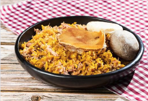

La lechona tiene sus orígenes en Arabia y fue introducida en Colombia por los españoles en el siglo XVI. Este plato imponente, que incluso tiene un día propio (29 de junio), es típico del Tolima. Allí se rellena exclusivamente con arvejas fritas y carne de cerdo adobada en cebolla, ajo y el toque especial de cada cocinero. En Bogotá y otras regiones del país, la lechona se prepara con arroz y diferentes tipos de carne. Puede incluir arepa paisa y se sirve con un trozo de cuero dorado y crocante, acompañado de “insulso”, una masa de maíz, panela, canela y aceite o mantequilla envuelta en hojas de “viao”. Como dato curioso, en algunos lugares aún rifan la cabeza frita del animal, aunque esta tradición es menos común hoy en día.
